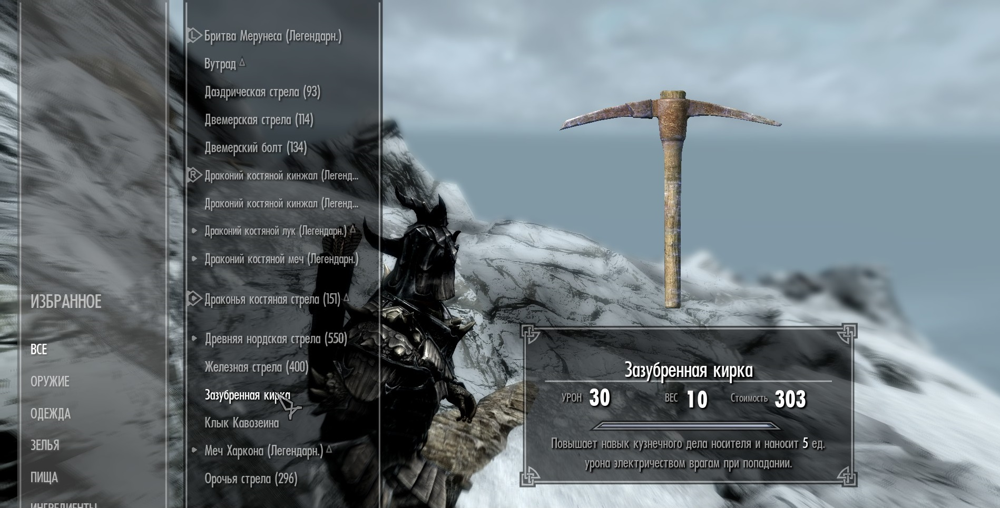

5.Если вы любите простой и действенный геймплей, то раскачивайте себе ассасина — скрытность(учить у учителей и качать с помощью данной схемы), умение "Клинок ассасина" в дереве "Скрытность", одноручное оружие, кинжал, перчатки темного братства, броня и кольца на повышение урона одноручным оружием. Подходим крадучись к врагу сзади и наносим 30-кратный урон:3(почти любой противник ложится с одного удара)
6.Если вы легендарный Довакин-алхимик, то половину игрового процесса вы будете заниматься ловлей бабочек, дерганием травок и поиском редких корней или грибов:D
7.Если вам не нравится внешность вашего персонажа — в городе Рифтен("Буйная фляга", штаб Гильдии Воров) есть "скульптор лиц", который поменяет вам все, кроме пола и расы(даже телосложение).
8.В игре есть отсылка на Minecraft в виде Зазубренной кирки(находится на самой высокой точке Глотки мира — самой высокой горы в Скайриме). Зазубренная кирка в оригинале называется Notched Pickaxe, а Minecraft придумал Маркус «Нотч» Перссон.

9.В игре есть отсылка на Прыжок веры из Assasin's creed. Для этого нужно переместиться в локацию "Пик прыжок Барда"


Вернуться на главную страницу